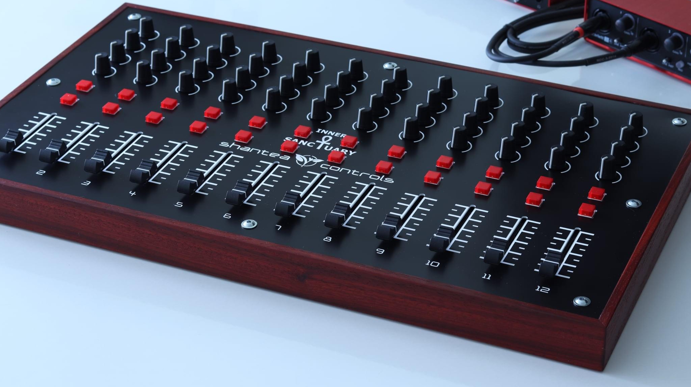

Open platform for ultimate MIDI control deck building

OpenDeck is a platform for building MIDI controllers. It is a firmware running on various boards which transforms them into class-compliant USB MIDI devices, making them compatible with any MIDI software on any operating system. There is plenty of 3rd party HW designs in their repo.
All DB data
- Name: OpenDeck
- Author: ShanteaControls
- Link: https://github.com/shanteacontrols/OpenDeck
- Demo: https://www.youtube.com/watch?v=ydmWxC_y35U
- Picture: ../pics/opendeck.jpg
- Description: Open platform for ultimate MIDI control deck building
- Notes: OpenDeck is a platform for building MIDI controllers. It is a firmware running on various boards which transforms them into class-compliant USB MIDI devices, making them compatible with any MIDI software on any operating system. There is plenty of 3rd party HW designs in their repo.
- Artifacts: {“Schematic”=>true}{“PCB”=>true}{“BOM”=>true}{“FW”=>true}{“Docs”=>true}{“Enclosure”=>false}
- Tags: MIDIKit
- Level: Advanced
{kind=link}